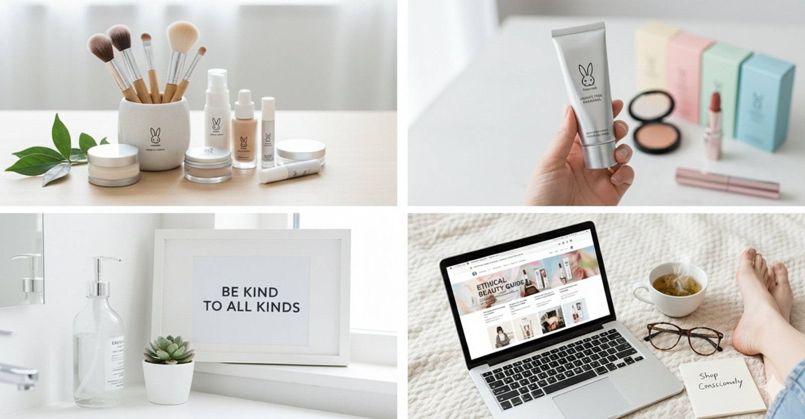

אפליקציות שימושיות
אפליקציות וכלים שמתחברים בדיוק ל‑DNA של האתר: בדיקת מותגים/מוצרים, מציאת מקומות טבעוניים, ותכנון קנייה.
כלים שאנחנו אוהבים
בחרנו כלים שימושיים במיוחד (עם קישורי iOS/Android), שמתאימים למי שרוצה לקנות טבעוני וללא ניסויים בצורה פשוטה.
טיפ קטן
לבדיקת רכיבים בתוך האתר — קפצי ל‑בודק רכיבים.